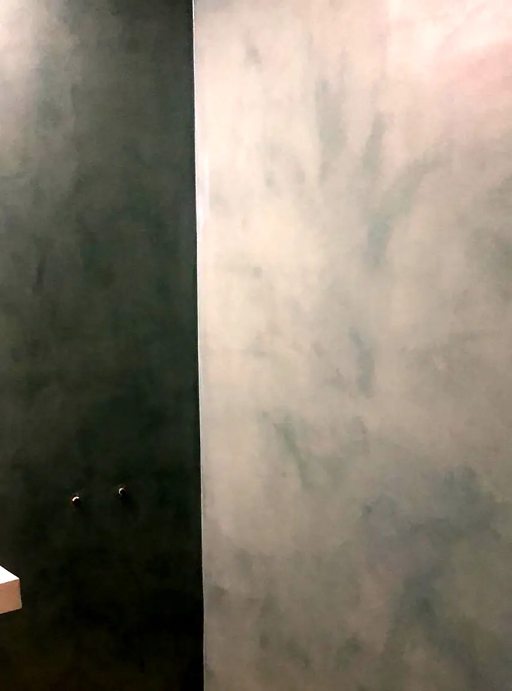

Estucos y pintura decorativa
El estuco y los acabados decorativos se trabajan a mano, con llana y espátula. Por eso dependen tanto del oficio como de la preparación: una pared mal preparada se nota más bajo un estuco que bajo una pintura lisa.
Qué incluye
- Muestra del acabado sobre la pared antes de aplicarlo entero
- Preparación del soporte hasta dejarlo plano y firme
- Estuco veneciano a la cal, espatulado en varias capas
- Veladuras y acabados con aguas
- Protección final con ceras cuando el acabado lo pide
Qué influye en el precio
| Factor | Por qué influye |
|---|---|
| Técnica | Cada estuco o efecto tiene su número de capas y su tiempo de secado. |
| Superficie | Una pared de acento o una estancia entera. |
| Estado del soporte | Un estuco necesita una pared muy plana: si no lo está, hay que alisarla antes. |
Fotos de obra

Foto propia pendienteEstuco terminado con luz rasante
Foto propia pendienteAplicación con llana durante la obra
Dudas sobre estucos y pintura decorativa
- ¿Puedo ver el acabado antes de decidir?
- Sí. Hacemos una muestra sobre tu pared antes de aplicarlo en toda la superficie.
- ¿Qué diferencia hay entre estuco y microcemento?
- El estuco es un acabado decorativo de pared, con brillo y profundidad. El microcemento es un revestimiento resistente que también sirve para suelos, duchas y encimeras.
Pide una valoración
Indica el municipio y qué superficies quieres renovar. Si tienes fotos, envíalas por WhatsApp.